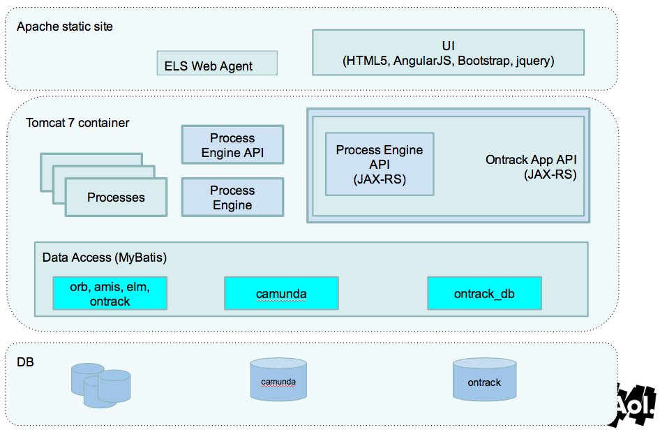

hey, welcome to
- I'm @dankapusta.
- I like shipping software.
- We'll run thru some slides, then roll something out (to dev).
- This is a way to do CI/CD, not the way to do it.
- This preso is done using reveal.js
app stack
Our cloud provisioning UI is an AngularJS app.
my goals
- Local dev (requires CORS for REST API access)
- Dev speed/agility (no waiting for build host).
- No network SPOFs when building (npmjs.org goes down).
- Fast on-the-fly testing (JSHint and Protractor).
- Disaster recoverablity using semver tags.
- Minimize process! (process ≈ taxes)
What's the result?
A static docroot!
- Compile static artifacts and check them into the repo.
- Not everyone likes this idea.
- I do and I provide a bower.json file.
- The docroot directory is small (558K compressed).
- A tiny VM can serve the front end.
- Just need Apache or Nginx and a few conf tweaks.
 bower dep mgmt
bower dep mgmt
- Install 3rd party deps locally.
- Reinstall occasionally.
- Avoids npmjs.org and Bower repo SPOFs (ie, downtime).
- Build locally without resintalling every time.
We'll tour the dir structure in a minute.
Checking in your dependencies (or not)
- Addy Osmani on checking in deps.
- I don't check in src/components (huge dep tree).
- Run cd build && npm list and you'll see why.
- Pluck from src/components and copy to docroot.
- Dist docroot using your favorite mechanism...
- jenkins
- travis
- bower (yes, bower)
 i love grunt
i love grunt
- Live reloading via grunt (or via "livereload").
- Some tests run on save (JSHint fast, unit tests slow).
- On the run JSHint testing using grunt watch:quick
-
Run unit and e2e tests from the CLI.
- grunt run-e2e-tests
- grunt run-unit-tests
- Check out Protractor
file/directory tour
-rw-r--r-- 1 dan staff 74 Aug 1 08:46 .gitignore
-rw-r--r--@ 1 dan staff 9842 Jun 5 16:37 README.md
-rw-r--r-- 1 dan staff 121 Aug 1 08:46 bower.json
drwxrwxrwx 7 dan staff 238 Aug 1 08:46 build
drwxrwxrwx 11 dan staff 374 Aug 1 08:46 docroot
drwxrwxrwx 10 dan staff 340 Aug 1 08:46 src
drwxr-xr-x 6 dan staff 204 Jul 8 11:20 test.gitignore
/build/node_modules
/src/components
/src/tmp
/test/unit/unit_results.htmlbuild
-rw-r--r--@ 1 dan staff 1592 Jan 28 2014 .jshintrc
-rwxr-xr-x 1 dan staff 10411 Aug 1 08:46 Gruntfile.js
drwxr-xr-x 22 dan staff 748 Jul 28 15:48 node_modules
-rwxr-xr-x 1 dan staff 1264 Aug 1 08:46 package.json- We npm install in here.
- Run grunt for full rebuild.
- Run grunt quick for small/fast rebuild.
- Why not Gulp?
- This Grunt thing is working a-ok.
- Gulp is more useful down in nodeland.
src
-rw-r--r--@ 1 dan staff 34 Jan 31 2014 .bowerrc
-rw-r--r-- 1 dan staff 644 Aug 1 08:46 bower.json
drwxr-xr-x 21 dan staff 714 Jul 15 13:56 components
drwxrwxrwx 8 dan staff 272 Aug 1 11:01 js
drwxrwxrwx 6 dan staff 204 Aug 1 08:46 less
drwxrwxrwx 13 dan staff 442 May 19 11:05 templates
drwxrwxrwx 5 dan staff 170 Aug 1 08:46 tmp- We bower install in here.
- We .gitignore the components directory.
- 95% of the work is done in here.
test
-rw-r--r--@ 1 dan staff 4469 Jul 8 11:20 README.md
drwxr-xr-x 5 dan staff 170 Aug 1 08:46 e2e
drwxr-xr-x 5 dan staff 170 Jan 31 2014 examples
drwxr-xr-x 7 dan staff 238 Jan 31 2014 unit- This is the hole in the donut.
- Using Protractor to run tests.
- cd ../build && grunt run-e2e-tests
docroot
-rwxr-xr-x 1 dan staff 948 Apr 23 10:45 .htaccess
drwxrwxrwx 15 dan staff 510 Aug 1 08:46 css
drwxrwxrwx 7 dan staff 238 Jan 31 2014 font
drwxrwxrwx 23 dan staff 782 Jan 19 2014 images
-rw-r--r-- 1 dan staff 2320 Aug 1 08:46 index.otk
drwxr-xr-x 18 dan staff 612 Aug 1 11:01 js
drwxrwxrwx 12 dan staff 408 Aug 1 08:46 json
drwxr-xr-x 12 dan staff 408 Jun 30 09:35 templates- The full site lives in here.
- Only 588k compressed!
- Point Apache/Nginx at this directory.
- httpd.conf
- httpd-vhosts.conf
 source control
source control
how i dist
- Get everyone to push their code to Stash (or Github).
- Pull (or fetch/merge) develop from origin.
- Sort out merge conflicts, check it in.
- Push develop to origin.
- Trigger/Verify the Jenkins dev job.
- Merge develop into master.
- Tag the repo with a semver tag.
- Push master up to Stash with the new tag.
- Trigger/Verify the Jenkins prod job.
 dev code delivery
dev code delivery
run on any new commit
- ontrack-ui-fetch - Make a tarball, archive it.
- ontrack-ui-copy-artifacts - Dist the tarball.
Separate jobs so we can re-dist easily (eg, new VM).
prod code delivery
run on new commit + new tag
- ontrack-prod-ui-fetch - Make tarball, archive it.
- ontrack-prod-ui-copy-artifacts - Dist the tarball.
Separate jobs so we can re-dist easily (eg, new VM).
code time
Let's patch in auth group array...